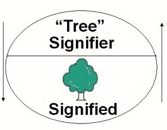

01 — Introduction
Introduction to linguistics
October 13, 2025
Organisation
Course materials
Course website: https://wuqui.github.io/Intro252/
Registration
Any open issues?
Teaching approach
Flipped classroom:
- students prepare before class (readings, exercises);
- in-class time focuses on discussion and practice.
Schedule
| Date | Topic | Required reading | |
|---|---|---|---|
| 1 | 13 Oct. | Organisation & introduction | (Herbst 2010, ch. 2) |
| 2 | 20 Oct. | History of English | (Bieswanger and Becker 2021, ch. 2.1) |
| 3 | 27 Oct. | Pragmatics | — |
| 4 | 3 Nov. | Phonetics & phonology I | (Kortmann 2020, ch. 2.1) |
| 5 | 10 Nov. | Phonetics & phonology II | (Kortmann 2020, ch. 2.2) |
| 6 | 17 Nov. | Syntax I | (Herbst 2010, ch. 11.1–11.2) |
| 7 | 24 Nov. | Syntax II | (Herbst 2010, ch. 11.3–11.4) |
| 8 | 1 Dec. | Morphology and word-formation I | (Herbst 2010, ch. 8); (Kortmann 2020, ch. 4.1) |
| 9 | 8 Dec. | Morphology and word-formation II | (Herbst 2010, ch. 9.1–9.3) |
| 10 | 15 Dec. | Semantics and lexicology I | (Mair 2022, ch. 6.1–6.3); (Kortmann 2020, ch. 6.3.2) |
| 11 | 22 Dec. | Revision | — |
| 12 | 12 Jan. | Semantics and lexicology II | (Kortmann 2020, 173–85); (Sauer and Majewski 2020, ch. 11.1–11.4.5) |
| 13 | 19 Jan. | Sociolinguistics | — |
| 14 | 26 Jan. | Mock exam | — |
| 15 | 2 Feb. | Exam | — |
Requirements
Literature
Selected introductions to English linguistics:
- Bieswanger, Markus & Annette Becker. 2021. Introduction to English linguistics. 5th ed. Tübingen: Narr.
- Herbst, Thomas. 2010. English linguistics: A coursebook for students of English. Berlin: De Gruyter.
- Kortmann, Bernd. 2020. English linguistics: Essentials. 2nd ed. Stuttgart: Metzler.
- Mair, Christian. 2022. English linguistics: An introduction. 4th ed. Tübingen: Narr.
- Plag, Ingo, Sabine Arndt-Lappe, Maria Braun & Mareile Schramm. 2015. Introduction to English linguistics. 3rd ed. Berlin: De Gruyter.
- Sauer, Hans & Kerstin Majewski. 2020. My first door to English linguistics: A short companion to the study of English. Tübingen: Stauffenburg.
All available as ebooks at the university library (https://www.ub.uni-muenchen.de/index.html).
Introduction
Course description
This course introduces you to the fundamental components of English linguistics, explains the major theoretical approaches and concepts in these fields, and examines some methodological issues.
The curriculum consists of
- phonetics and phonology,
- morphology and word-formation,
- syntax,
- semantics and lexicology,
- pragmatics,
- sociolinguistics, and
- history of English.
The aim is to provide you with a broad foundation so that you can specialise based on your interests in subsequent courses.
Linguistic fundamentals
Language as a tool for communication
The Organon model (Bühler 1934)

The model of the linguistic sign

- form – meaning/function
- relationship: arbitrary
Linearity of language

Paradigmatic vs syntagmatic relations

Synchrony vs diachrony

Change of meaning over time (Hamilton, Leskovec, and Jurafsky 2016)
Langue vs parole

Langue: rules of the game
Parole: how the game is actually played
Descriptivism vs prescriptivism

Object language vs metalanguage
Examples:
- Saying shit is not allowed.
- verb is a noun.
- I don’t know the word for word in Spanish.
Object language vs metalanguage
Exercise:
- The meaning of bank is ambiguous.
- Noun phrases often start with the words the or a.
- Morphology is the field of language which studies the formation of new words.
- The past tense of verbs is formed by adding the suffix -ed.
Linguistic domains
Core domains
- phonetics and phonology
- morphology and word-formation
- syntax
- semantics
- pragmatics
- sociolinguistics
- historical linguistics
- …
Phonetics and phonology
Our Strange Lingo (Lord Cromer)
When the English tongue we speak.
Why is break not rhymed with freak?
Will you tell me why it’s true
We say sew but likewise few?
And the maker of the verse,
Cannot rhyme his horse with worse?
Beard is not the same as heard
Cord is different from word.
Cow is cow but low is low
Shoe is never rhymed with foe.
Think of hose, dose, and lose
And think of goose and yet with choose
Think of comb, tomb and bomb,
Doll and roll or home and some.
Since pay is rhymed with say
Why not paid with said I pray?
Think of blood, food and good.
Mould is not pronounced like could.
Wherefore done, but gone and lone -
Is there any reason known?
To sum up all, it seems to me
Sound and letters don’t agree.
Phonetics and phonology
What do you hear?
Test
Analysis
Morphology and word-formation
- How many parts does the word disclaimers consist of?
- How can we analyse this complex word in terms of its parts?

Why and how do we form new words?

Syntax
What’s the problem with the following sentence?
The old man the boat.
The sentence is ungrammatical:

The sentence is grammatical:

Applied fields
- lexicography
- language acquisition and learning (teaching)
- cognitive linguistics and psycholinguistics
- computational linguistics
- forensic linguistics
- …
Lexicography

The Oxford English Dictionary (OED)
Cognitive linguistics and psycholinguistics
The Stroop effect

Computational linguistics

Hubs of lexical innovation (Grieve, Nini, and Guo 2018)